数据快照：
Smell_Data@a5c37038（41 个仓库 · 7 种语言 · 297 道真实缺陷 · 2,424 份注入补丁 · 9,696 条完整轨迹） 研究对象：OpenCode 智能体分别搭载 GPT-5.6-Terra、GLM-5.3-Flash、DeepSeek-V4.1-Flash，在干净代码与坏味代码上修复同一缺陷。
讨论代码坏味时，如果只停留在“上帝类、长方法、依恋情结”这些表面名称，很难看清 AI 究竟受阻在哪里。事实上，AI 编程智能体遵循“① 入口检索 → ② 局部逻辑剥离 → ③ 落笔修改锚定 → ④ 契约验证与返工”的四步闭环推进工作；三类经典坏味的本质，是分别退化了代码的三个底层结构属性，进而卡住了闭环中的不同环节（表 1）。
表 1 从表面坏味到底层逻辑维度：AI 辅助开发受阻机理总览
| 底层逻辑维度 | 结构退化本质（静态指标） | 典型表象 | 击穿的 AI 工作环节 | 真实影响曲线形态 | 核心治理原则 |
|---|---|---|---|---|---|
| 职责分离度 （内聚与信噪比） |
多个无关业务职责混居同一命名空间，类内聚度（TCC）坍塌，同域词汇碰撞 | 上帝类 | ② 逻辑剥离 + ④ 多轮重算：检索命中膨胀，单次读取涌入大量干扰代码并反复计费 | 破界即阶跃，纯堆并列方法迅速饱和 | 拦截异质职责混入；重构必须恢复职责边界，仅按行数拆分无效 |
| 数据–行为局部性 （耦合与契约归属） |
核心方法脱离状态持有类（LAA 骤降），形成跨文件委托壳（文件跨度扩张） | 依恋情结、跨模块反向委托 | ② 双端核对 + ④ 契约误伤：被迫跨双文件比对状态，改共享宿主易误伤其他调用方 | 在“1→2 个文件”且触及故障逻辑时跃迁 | 保持核心逻辑与所操纵的数据同处一类，消除无谓转发壳 |
| 控制流复杂度 （分支与可切片性） |
具名子函数被内联压平为深层嵌套（5～8 层）与密集分支（CC 20～80） | 长方法、巨型内联流程 | ② 跨屏翻页 + ③ 编辑失配 + 漏修根因：超出单屏窗口、缩进失配报错、修表面漏深层 | 随必经分支数持续单调爬升（~160 行拐点） | 硬限函数 ≤160 行、嵌套 ≤4 层，保留具名小函数作语义路标 |
基准与度量方法。 实验基于多语言缺陷基准 SWE-bench Multilingual（Java、JS/TS、Go、Rust、PHP、Ruby、C/C++ 七种语言、297 道历史缺陷），在保持外部功能完全等价并经容器测试校验的前提下，向修复热点区（98% 为核心修改路径 E4）分别注入依恋情结（267 题）、上帝类（264 题）与长方法（277 题）的轻（S0）、中（S1）、重（S2）三档变体，共形成 7,223 组有效同题配对运行（272,200 次工具调用）。为穿透表面档位，我们从 2,424 份补丁与轨迹中直接提取补丁实际改动生产文件数、新增控制流分支关键字数（$\Delta\text{Branches}$）、核心故障点纠缠标记（原标准修复补丁是否因结构变动被迫重写，即是否存在 -gold.patch）以及四阶段工具轨迹。全部统计采用按原题等权的几何平均变化与按仓库聚类的 4,000 次 Bootstrap 95% 置信区间。
图 1 与表 2 展示了三款模型在四个评测维度上的整体表现及 S0/S1/S2 分档对比。
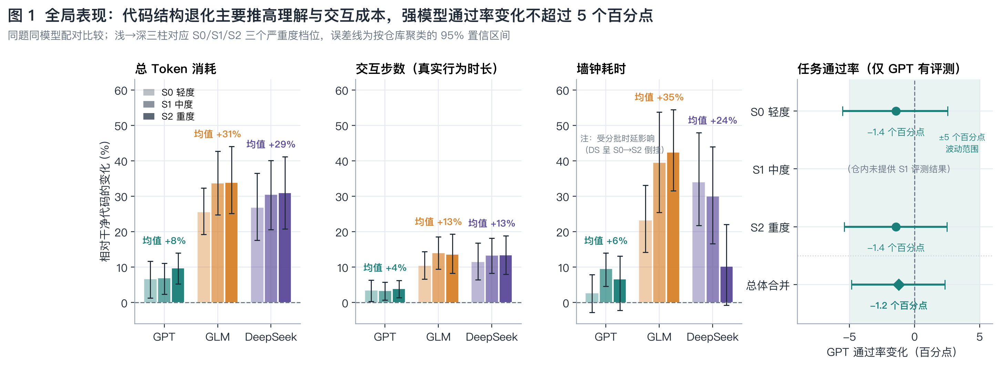
表 2 注入坏味后的全局变化（按原题等权的几何平均变化及 95% 置信区间）
| 模型 | 有效配对 / 原题数 | 总 Token 变化 | 交互步数变化（真实行为时长） | 单步上下文均值变化 | 墙钟耗时变化* | 每题中位额外开销 |
|---|---|---|---|---|---|---|
| GPT-5.6-Terra | 2,415 / 297 | +7.8%（+3.3, +11.9） | +3.6%（+1.1, +5.9） | +4.1% | +6.2%（+0.7, +10.7） | +2.5 万（基线 29.9 万） |
| GLM-5.3-Flash | 2,409 / 297 | +30.9%（+24.5, +37.9） | +12.7%（+9.0, +16.2） | +16.2% | +34.8%（+25.0, +45.0） | +9.0 万（基线 46.7 万） |
| DeepSeek-V4.1-Flash | 2,399 / 296 | +29.5%（+20.3, +38.2） | +12.8%（+8.0, +17.4） | +14.8% | +24.4%（+13.9, +35.7） | +13.1 万（基线 53.4 万） |
* 注：墙钟耗时受分批运行的服务端响应速度漂移干扰（GLM 接触坏味前单步已慢 +14%，DeepSeek 呈 S0→S2 倒挂），评估智能体真实时间投入应以交互步数为准。
全局来看，坏味使智能体步数更多、每步背负的历史上下文更重，令轻量模型总开销上涨约三成，强模型上涨约 8%。在交付质量上（仓库仅归档了 GPT 在干净代码、S0 与 S2 下的 1,226 组测试判定），GPT 在 S0 与 S2 下的通过率变化均为 −1.4 个百分点（合并 −1.2 个百分点，95% CI −4.9 ～ +2.3，McNemar $p \ge 0.36$），与干净代码自身重跑的自然翻转率（9.6%）无异——强模型能够靠多读几轮消化结构坏味。
按现行 S0→S1→S2 分档观察（图 2、表 3），会出现一个反直觉现象：轻度阶段（S0）已占去重度阶段总涨幅的 68%（GPT）、78%（GLM）与 88%（DeepSeek）；继续加重到 S2，依恋情结几乎走平，上帝类在 S2 甚至回落，唯独长方法持续爬升。
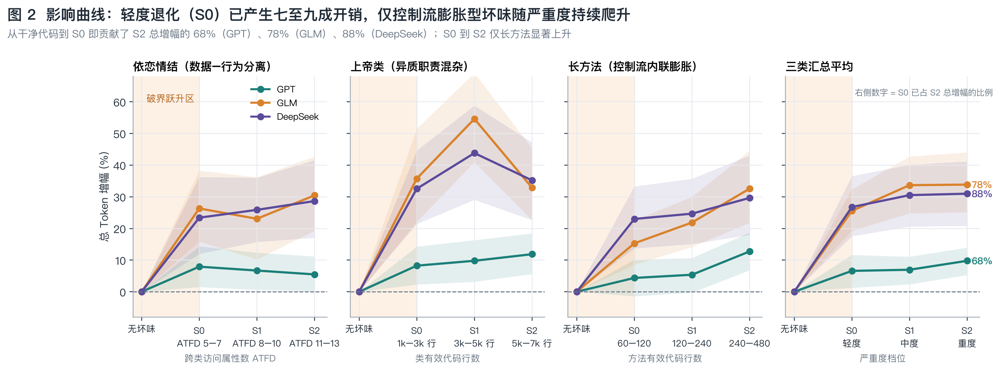
表 3 现行 S0 → S1 → S2 分档下的总 Token 增幅（%）及底层结构中位数
| 坏味类型 | 结构指标中位数（S0 → S1 → S2） | GPT（S0 / S1 / S2） | GLM（S0 / S1 / S2） | DeepSeek（S0 / S1 / S2） |
|---|---|---|---|---|
| 依恋情结 | 外部属性 6→9→12；改动文件 2→2→2；波及文件 5→5→6 | +7.9 / +6.7 / +5.5 | +26.3 / +23.1 / +30.4 | +23.4 / +25.9 / +28.7 |
| 上帝类 | 新增行数 1.2k→3.5k→6.0k；改动文件 6→6→6；波及文件 7→7→7 | +8.3 / +9.8 / +11.9 | +35.8 / +54.6 / +32.9 | +32.5 / +43.8 / +35.2 |
| 长方法 | 方法行数 81→149→274；圈复杂度 18→35→70；改动文件 1→1→1 | +4.4 / +5.4 / +12.7 | +15.3 / +21.9 / +32.6 | +23.0 / +24.7 / +29.6 |
| 三类汇总 | 新增行数 94→151→279；波及文件 6→6→6；跨模块 3→3→3 | +6.6 / +7.0 / +9.8 | +25.6 / +33.7 / +33.9 | +26.8 / +30.5 / +31.0 |
如果剥离人为设定的 S0–S2 标签，直接以补丁实际改动的生产文件数为横轴重画全量曲线，并在同一原题内部做控制变量回归比拼，真相便一目了然（图 3）：
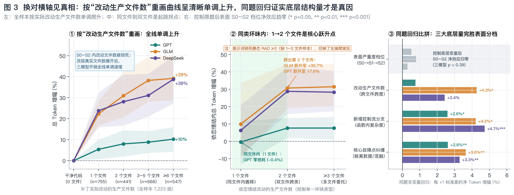
0 → 1 → 2 → 3–5 → ≥6 个文件）重排全部 7,223 组配对，三模型开销同步单调爬升：GLM 从 +22.3% 升至 +30.9% → +38.2% → +39.2%，DeepSeek 从 +23.8% 升至 +28.1% → +31.1% → +38.8%，GPT 从 +5.4% 升至 +8.0% → +8.8% → +10.2%。RAD ≥ 3 硬约束切掉了左端爬坡区（图 3 ②）。 在依恋情结内部，当方法仅在同一个生产文件内搬移（1 文件，n=96）时，GPT 额外开销为 −0.4%（零损耗），GLM 与 DeepSeek 也仅 +9.9% 与 +6.2%；一旦跨出第 2 个生产文件（n=369），三模型立刻跃升至 +7.6%、+30.7% 与 +28.8%（翻了 3～5 倍）。反观注入提示词中的静态波及文件数 RAD，因协议硬性锁死 RAD ≥ 3（全数据集 1～2 文件样本数为 0），人为抹平了早期的敏感爬坡段。S0→S2）与三项底层结构量放入同一回归：表面档位净效应在三模型上均趋近于 0 且不显著（+0.3% ～ +0.8%, $p > 0.38$），而改动生产文件数、新增控制流分支数、核心故障逻辑纠缠显著主导了成本增长（每 +1 标准差带来 +2.6% ～ +4.7% 净增幅）。图 4 与表 4 进一步从智能体的实际读取视野，解释了为什么“往大类里塞五千行代码不涨价，往长函数里加两百行却猛涨”。
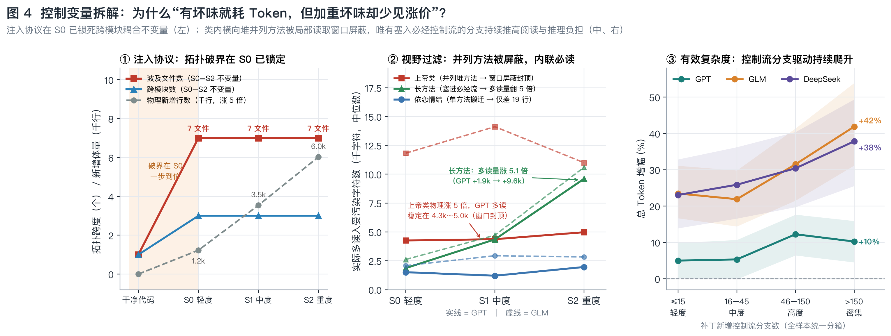
表 4 S0 → S2 控制变量对照：物理代码增长方向与智能体实际读入字符中位数
| 坏味类型 | S0–S2 锁定的拓扑不变量 | S0 → S2 放开的变化量（中位数） | 智能体实际读入受污染文件字符数（S0 → S1 → S2） | 视野过滤解释 |
|---|---|---|---|---|
| 依恋情结 | 只搬 1 个方法留转发壳；改动恒为 2 文件 | 外部属性 6→12，但新增代码仅 65→78→84 行 | GPT 增量：+1.5k → +1.2k → +2.0kGLM 增量： +2.1k → +2.9k → +2.8k |
跨文件破界在 S0 已完成，物理体量仅差 19 行 |
| 上帝类 | 波及恒为 7 文件、改动恒为 6 文件 | 在类末尾横向追加孤立并列方法（1.2k→6.0k 行） | GPT 总读：18.4k → 18.8k → 18.3kGLM 总读： 31.0k → 34.2k → 27.2k |
grep 定位加限长读取屏蔽了无关方法；>5k 行放弃翻页致 S2 反降 |
| 长方法 | 改动恒为 1 文件、跨 3 模块 | 在待修函数体内纵向塞入控制流分支（78→274 行） | GPT 增量：+1.9k → +4.4k → +9.6k（涨 5.1 倍）GLM 增量： +2.6k → +4.7k → +10.6k（涨 4.1 倍） |
膨胀逻辑卡在函数入口与修改点之间，无法跳过，驱动成本单调爬升 |
简言之，现代智能体通过关键词检索定位目标方法后按窗口分段读取（GPT 100% 限长读取，工具另有 50KB 截断上限）：类末尾横向堆砌的几千行并列兄弟方法根本不会进入上下文；甚至当文件超过 5,000 行（上帝类 S2）时，智能体看到总行数提示后直接放弃连续翻页（GLM 读取起点数从 S1 的 2.38 个回落至 1.84 个），反而造成 S2 比 S1 更省。相反，函数内部纵向塞入的控制流分支挡在理解逻辑的必经路径上，迫使多读字符翻了 4～5 倍，使全样本开销随分支增量单调攀升（图 4 ③）。
将全部轨迹拆解为四个阶段后（图 5），首先排除了一种常见误解：坏味并没有让 AI 找不到目标文件——首次定位并打开目标文件前的检索步数差接近 0（−0.03 ～ +0.10 步）。真正的阻力全部发生在进门之后：
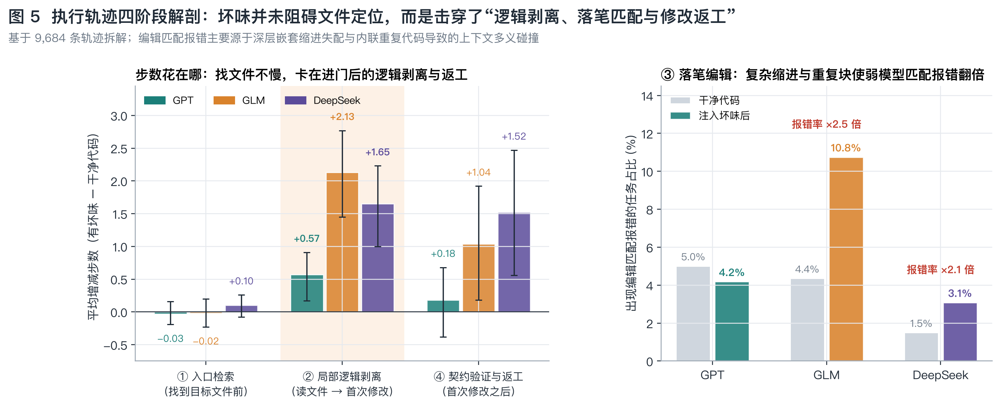
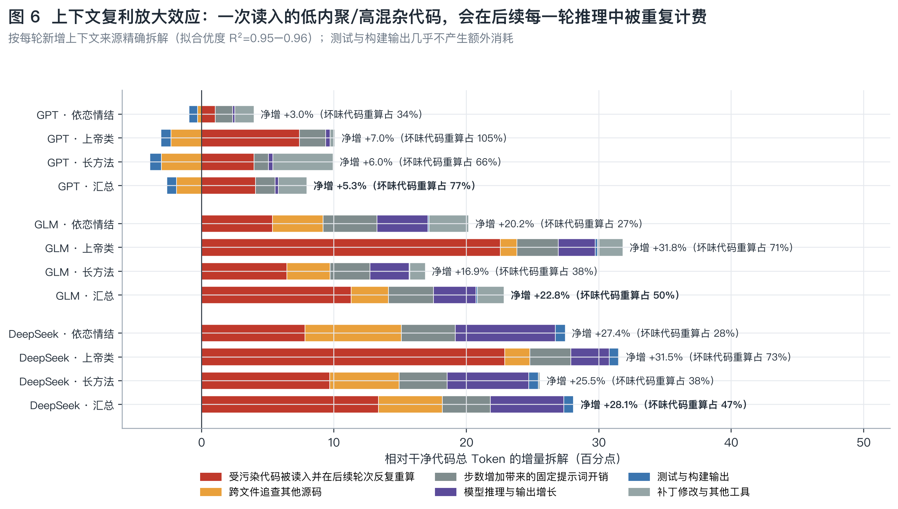
结合具体补丁与轨迹行为指标（图 7～图 9），三类底层逻辑问题分别通过以下机制制造损耗或缺陷：
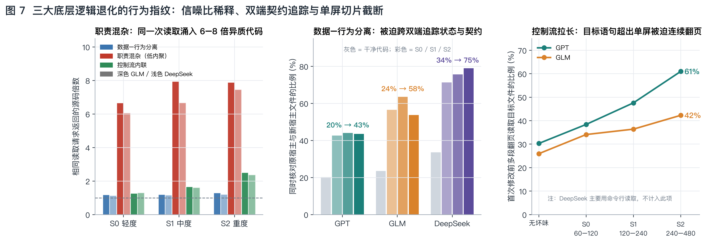
grep 命中条数膨胀 20%～35%，相同默认读取请求返回 6.1～8.0 倍异质源码。例如在 apache__druid-14092 中，DruidLeaderClient 混入了上层协调器的状态码判断逻辑后，GPT 无法一次看清重试契约边界，被迫连发 5 次复杂正则搜索并追查 3 个外部管理类，工具调用从 19 次增至 29 次。laravel__framework-52451 中，校验消息查找逻辑被迁入通用容器 MessageBag 后，GPT 首次修改误伤了同容器的内置 size.string 规则，多花的 24.1 万 Token 中有 94.3% 耗在兼容性返工上。phpoffice__phpspreadsheet-3659 中，GPT 在 275 行、8 层嵌套的 parse() 里修完表层字符串转换报错便提前结束，漏掉了深埋其中的跨表解析缺陷。在 GPT 全部 79 道成败分化原题中，未通过变体比同题通过变体反而少花 14.2% Token、少走 9.8% 步数、少跑 0.79 次测试（$p < 0.002$）。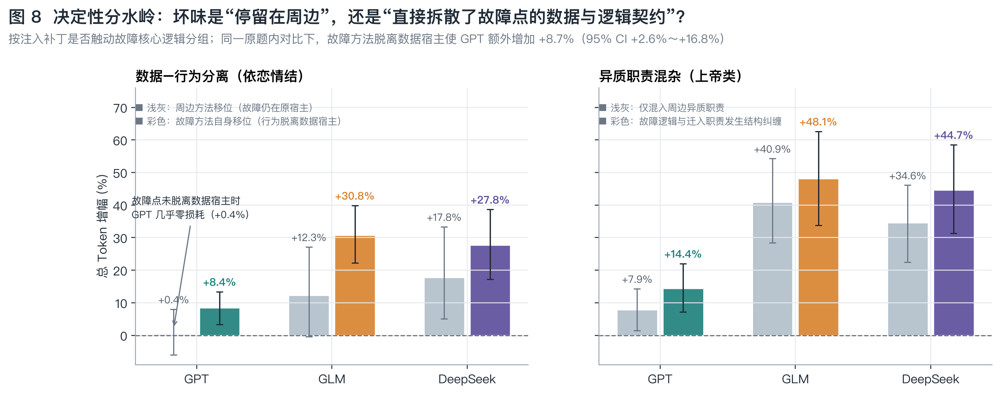
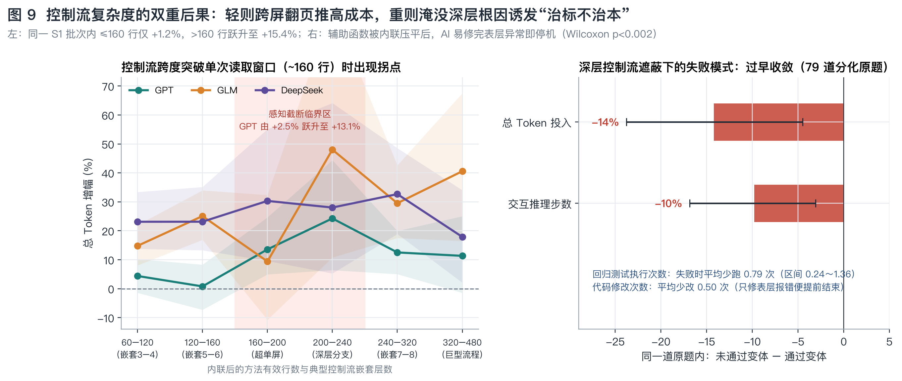
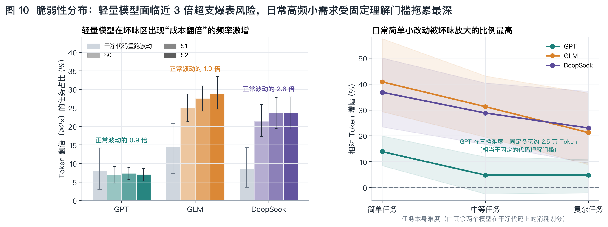
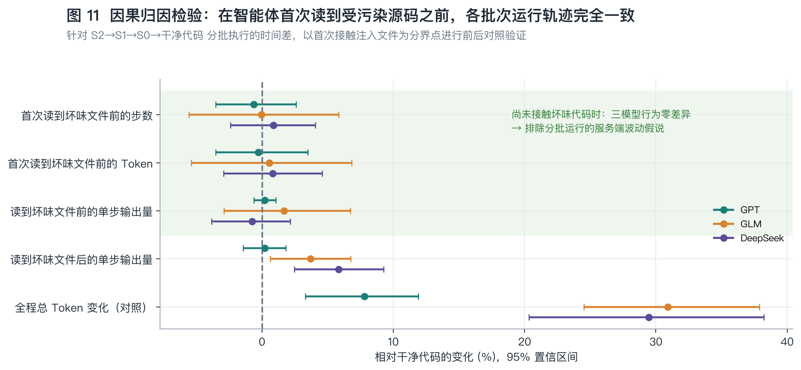
传统“等文件膨胀到几千行再按体积拆分”的做法在 AI 时代已经失效。基于上述实证规律，工程治理应遵循以下准则（图 12）：
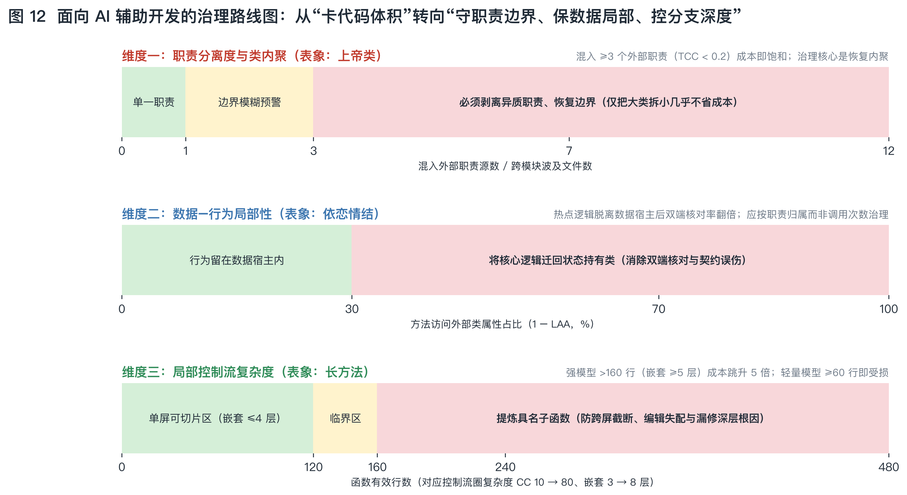
S1～S3 坏味分级设计方案与研究边界S1～S3 响应曲线的三条全局铁律与参数矩阵现行 S0–S2 之所以出现平台与倒挂，是因为：(1) S0 起步锁死 RAD ≥ 3；(2) 上帝类靠末尾堆孤立方法凑行数（被窗口屏蔽，且 >5,000 行诱发弃读翻页倒挂），依恋情结仅增只读属性（差 19 行）；(3) 三档独立生成导致同一原题下命中完全相同代码单元的比例仅 27.3%（依恋情结）、59.9%（长方法）、61.7%（上帝类）。要在下一代基准中获得清晰单调的 Clean → S1 → S2 → S3 曲线，需执行以下规范（图 13、表 5）：
Clean → S1 → S2 → S3 逐档叠加）。固定同一待修复核心方法（E4），S2 在 S1 补丁上增量演化，S3 在 S2 上叠加演化，使同目标单元率达 100%。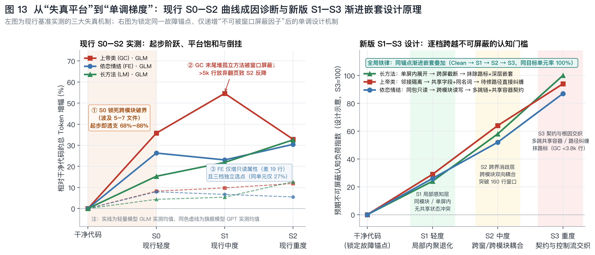
表 5 面向单调响应曲线的下一代 S1～S3 坏味分级注入规范
| 坏味与核心递增因子 | S1 轻度（局部感知层：同模块 / 单屏内） |
S2 中度（跨界消歧层：跨模块 / 跨窗口） |
S3 重度（契约与根因交织层：多跳 / 深层压平） |
|---|---|---|---|
| 依恋情结 委托跳数 × 状态读写 × 共享宿主契约 |
同包单跳只读搬移：迁入同模块 1 个专用辅助类（2 文件、1 模块、1 跳）；仅只读访问原宿主属性（ATFD 4–6，LAA 0.25–0.40）；新宿主无共享契约冲突 | 跨模块双端读写聚合：迁往另一业务模块，聚合 2–3 个外部状态源（3–4 文件、2 模块，ATFD 7–10，LAA 0.10–0.25）；含反向状态回写或双向回调 | 多跳委托链 + 共享容器契约冲突：跨 ≥3 模块、≥2 跳委托链（≥5 文件，LAA ≤0.10）；终点宿主必须承载 ≥2 条既有业务/测试路径共用的可变状态容器 |
| 上帝类 共享字段 × 同名词碰撞 × 待修路径纠缠 |
同模块邻接共居（状态隔离）：吸收同模块 1–2 个辅助类（500–1,000 行，TCC 0.20–0.35）；与待修方法不共享可变字段、无调用依赖 | 跨模块混入 + 共享字段与同名词诱饵：跨 2 模块混入同类职责（1,200–2,200 行，TCC 0.08–0.20）；共享 ≥2 个核心可变字段，周边交错布置 3–5 处同名词诱饵 | 枢纽型路径直接纠缠（严控上限 <3,800 行防弃读）：跨 ≥3 模块融合 ≥6 文件职责（2,200–3,800 行，TCC <0.08）；强制待修方法执行路径直接调用迁入前置校验或状态转换 |
| 长方法 窗口跨度 × 分支复用 × 抹除语义路标 |
单屏内局部辅助展开：仅展开本类 1–2 个私有短函数；有效长度 70–130 行（修改点距入口 <90 行，留在单屏内），CC 12–22，嵌套 3–4 层，保留高层具名子函数 | 跨单屏截断 + 跨文件分支状态复用：继续内联同模块 2–3 个文件分支；长度 160–250 行（跨过单屏窗口，修改点距入口 ≥140 行或首尾联动），CC 25–45，嵌套 5–6 层 | 跨模块全流程压平 + 100% 抹除具名路标：将跨 ≥2 模块、≥4 文件的解析/校验/计算/回退全流程压平，彻底抹除中间具名子函数；260–450 行，CC 50–85，嵌套 7–8 层，含相似重复缩进块 |
| 宏观架构坏味扩展 契约变更的跨模块传播跳数 |
双模块单向跨层直连：绕过接口直接依赖相邻模块内部数据结构（需 2 个文件同步核对） | 三模块闭环循环依赖（A→B→C→A）：类型签名或状态初始化形成闭环，单点修改触发环路编译或回调冲突 |
散弹式契约分散 + ≥4 模块环网校验：同一业务规则散落于 ≥4 模块 ≥5 个类中交叉校验，漏改任一处即集成测试失败 |
# 仓库根目录下使用 Python 3.12 一键复现全部数据、图表、网页/PDF 论文与 12 页演示文稿：
python analysis/smell_paper/parse_traces.py && python analysis/smell_paper/analysis.py
python analysis/smell_paper/figures.py
python analysis/smell_paper/build_paper.py && python analysis/smell_paper/build_slides.py